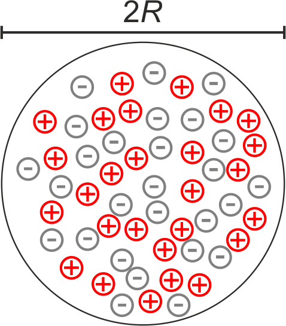

This page was generated from `/home/lectures/exp3/source/notebooks/L19_AMA/Structure_of_matter.ipynb`_.

The Structure of Matter - a Historical Approach¶
Do atoms exist?¶
We would like to briefly introduce historic experiments facing the question, whether atoms really exists. Therefore, we will discuss Dolaton’s law and the law of Gay-Lussac before we resolve the structure of atoms an the basis of Thomson’s and Rutherford’s experiments.
The oldest documents about the structure of matter being composed of infinite small, but space-filling particles originate from the Greek philosophers Leukip and Demokrit. Those particles differ in size and shape, and properties of objects on the macroscopic scale arise from the arrangement of these particles. Since they assumed these particles are indivisible, they named them “:math:`alpha tau o mu o zeta`” (atoms). One century later,Epikur* refined the picture of atoms through ascribing the characteristic of mass to these particles, in addition to space demand.
Atoms and molecules¶
Dalton’s law¶
On the basis of precise quantitative analyses of chemical reaction and the ratios of educts and products, John Dalton developed the idea that every chemical compound is composed of substances, whereas the ratio of these substance is constant for a particular compound and the ratio unambiguously identifies a compound. In 1803 Dalton developed his idea of a chemical reaction being the separation and association of atoms, and published this idea in 1808 “A New System of Chemical Philosophy”. This publication stated three postulates: - All chemical elements are composed of small particles which cannot be dismantled any further. - All atoms of the same chemical element are identical in quality, size, and mass. However, these properties differ from the according properties of other elements. Consequently, the characteristics of an element are governed through the properties of its atoms. - If chemical elements form a chemical compounds, their atoms associate in a ratio of integers.
The law of Gay-Lussac¶
In 1805 Joseph Louis Gay-Lussac and Alexander von Humboldt discovered that hydrogen and oxygen at the same (partial-) pressure associate to water if they use volume ratios of 2:1, respectively. Later Gay-Lussac published: “If two or more gaseous substances associate at equal pressure and equal temperature, their volumes have an integer ratio”.
The Avogadro number¶
In 1811 Amadeo Avogadro introduced the term “molecule” as smallest particle of a gas which has the same characteristics as the gas itself. As a consequence Avogadro stated that at identical pressure and temperature equally big volumes of different gasses contain the same number of molecules. On the basis of his experimental findings, the term “molar volume” was introduced. The first definition was molar volume is the volume of 1 mol of a gas at standard conditions (\(p = 1013\mbox{ hPa}, T = 0 \mbox{ C}^{\circ}\)), whereas the weight of the gas in gramm corresponds to the molecular weight of the gas molecules. The modern, general definition of 1 mol is the number of particles which corresponds to 12 g of carbon \({}^{12}\mbox{C}\) and is valid for non-gaseous substances as well. The molar volume is \(V_{\mathrm{M}} = 22.414\mbox{ l}\) and the Avogadro number \(N_{\mbox{A}} = 6.022 \cdot 10^{23} \mbox{ mol}^{-1}\).
These experimental findings and concepts pathed the way for the modern understanding that mater is generally composed of atoms.
The Structure of atoms¶
Indication of charged particles within atoms¶
At the end of the 19th century experimental findings accumulated indicating matter bears charged particles. The main results were: - Experiments on electrolytic current demonstrated that molecules can dissociate, whereas the resulting ions migrate in opposite directions and transport charges and mass. - Gas dicharging phenomena are influenced through electric and magnetic fields. Thus, discharging is correlated to motion of charged particles. - Magnetic phenomena arise from electric conduction in metals and semiconductors. - \(\alpha\) and \(\beta\) radiation are deflected through magnetic fields; \(\alpha\) and \(\beta\) particles are positively charged, heavy particles and negatively charged, light particles, respectively. Consequently the concept of matter being composed of atoms was extended. Atoms in turn consist of positively and negatively charged particles which bear mass and charge.
Johann Wilhelm Hittorf observed in a gas discharge tubes that particles emitted from a cathode propagate at straight lines. Moreover, these particles can be deflected with the aid of a magnet. As a consequence of the emission from the cathode and the direction of the magnetic poles, these particles had to be negatively charged. Later in 1897, Joseph John Thomson determined the charge-to-mass ratio \(e/m\) and demonstrated that this ratio is independent of the cathode material. In constrast to charged particles emitted from the cathode, Eugen Goldstein observed in 1886 a ray emitted from the anode which is propagating in the opposite direction than the cathode ray. In 1887 Wilhelm Wien reported from a \(10^{-4}\) reduced charge-to-mass ratio of this anode ray and concluded that these particles are charged gas ions.
In 1899 Thomson and Charles Wilson studied sinking droplets of condensed water vapor. The speed of falling was depending on the size of the droplets and the viscosity of the retarding gas. While measuring the amount of water and charges Thomson and Wilson were able to estimate the elementary charge of about \(10^{-19} \mbox{ C}\). In 1910 Robert Andrews Millikan studied oil droplets rising and falling in a capacitor. On the basis of this method, the elementary charge is determined as \(e = 1.602\cdot 10^{-19} \mbox{ C}\).
Concerning the mass of an electron, its value is still only accessible via the charge-to-mass ratio. A precise measurement of the \(e/m\) ratio is possible with a Wien filter. To do so, an electron is accelerated by means of a voltage, whereas perpendicular to the propagation direction an electric filed deflects the electron beam. In addition a magnetic field is used to compensate the deflection. Thus, the \(e/m\) ratio depends only on the applied accelerating voltage and the electric and magnetic fields.
The Thomson model¶
At the beginning of the 20th century only negatively charged electrons as cathode rays and positively charged \(\alpha\) particles were available for scattering experiments. However, if \(\alpha\) particles are scattered at atoms, the electrons will have only a minor effect. The scattering depends for the most part on the spatial arrangement of positive charges within the atoms.
As a first attempt, in 1904 Thompson proposed the “Plump Pudding Model”. According to this model every atom consists of a number of \(Z\) electrons with a cumulative charge of \(-Z\cdot e\) and a number of \(Z\) positive charges. Thus, the atoms appear neutral on teh macroscopic scale.

Fig.: Model of an atom as proposed by Tomson. The equal amount of positive and negative charges are distributed across the atom volume.
Indication of a not-sufficient description is provided on the basis of simple calculations. If the \(Z\) electrons are equally distributed within a sphere with the radius \(R\) the electron density would measure
Then, the plasma frequency would result in
However, the estimated absorption and emission frequencies did not coincide with experimental results.
The Rutherford model¶
In 1909 Rutherford, Geiger and Marsden conducted scattering experiments of \(\alpha\) particles on gold foil. By means of a new, turnable apparatus they were able to detect angles of scattering up to \(180^{\circ}\). They recorded scattering signals at such angles which clearly contradicted the plump pudding model. In 1911 Rutherford proposed a model that explains the scattering signal. As a consequence all positive charges have to be compacted in a small volume at the center of an atom, and so most of the mass.
In order to calculate how the \(\alpha\) particles are scattered we define the number of particles per unit time impinging on an area \(A\) of the scattering volume \(V\) being \(\dot{N} \cdot A\) and the number of particles per unit time being scattered into the solid angle \(\Delta \Omega\) around \(\vartheta\) being \(\Delta \dot{N} \left( \vartheta, \Omega \right)\). The fraction of impinging particles being scattered into the solid angle \(\Delta \Omega\) then results in
which is determined through the density of scattering centers \(n_B\), the length of the scattering path \(\Delta x\), and the scattering cross section \(\frac{\mathrm{d} \sigma}{\mathrm{d} \Omega}\).
Concerning scattering on a Coulomb potential with the point-like charge \(Z\cdot e\) we make use of the relation between the scattering angle \(\vartheta\) and impact parameter \(b\)
with \(q=2e\), \(Q=Ze\), and \(\mu = \mu_{\alpha} \mu_{C}/(\mu_{\alpha}+\mu_{C})\). The latter denote the reduced mass of an \(\alpha\) particle and the atomic core. In order to calculate the fraction of particles being scattered at an angle \(\vartheta \pm \frac{1}{2} \Delta \vartheta\) and reaching the detector with an area of
we make use of the definition of the differential scattering cross section
and calculate the derivative of \(b\) with respect to \(\vartheta\)
When making again use of the relation between the scattering angle \(\vartheta\) and impact parameter \(b\) and the relation \(\sin \left( \vartheta \right) = 2 \sin \left( \frac{\vartheta}{2} \right)\cos \left( \frac{\vartheta}{2} \right)\), we can calculate the differential scattering cross section of a particle with charge \(q\) and reduced mass \(\mu\) in the Coulomb field of the charge \(Q\)
If we use \(E_{\mathrm{kin}} = \mu \cdot v_0^2\) and \(\mu \approx m_{\alpha}\), we obtain
which is the Rutherford formula. This formula reproduced the measured data except for big angles, and thus small impact parameters. Rutherford concluded that deviations at big angles arise from the nuclei which are in fact small compared to an atom but not point-like.